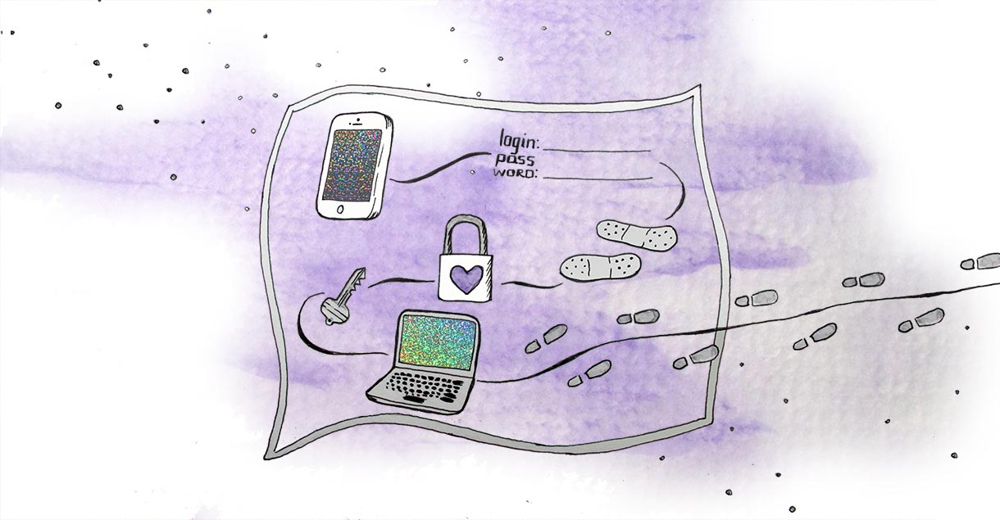

I want to leave my partner.
Leaving a relationship is difficult under any circumstance. It may depend on your physical safety, the safety of your children, the financial resources available to you, immigration status, work opportunities, and a myriad of other factors. You know what's best for you. Before reading this guide, consider reaching out to a domestic violence organization for support.
This guide will focus on technological vulnerablities that emerge when leaving a relationship. Securing your phone and computer protects your communication with your support networks. Using strong, unique passwords for email, bank accounts, healthcare accounts, and other important online services can prevent your partner from sabotaging your livelihood. Backing up important data, such as document files or photos, provides a safety-net in case you lose control of your personal devices or accounts. By taking steps to secure your digital life, you are asserting your independence.
Create a safety plan
Because technology can be so complex, spread across devices and websites, creating a technology safety plan will ensure that you're adequately prepared to leave your partner. You can consider potential data breaches, threats to your devices, and other factors that could affect the separation from your partner. We'll explore several strategies that mitigate the risks surrounding your digital assets. Then, you can make informed decisions on what security measures make the most sense for you.
Use devices you know are not being monitored
If you know or suspect your partner to be monitoring your online activity, consult our guide My partner is monitoring my computer or cell phone activity before taking further action. You want to make sure that you're leaving the relationship on your own terms, especially if you're afraid of your partner's reaction. When searching for support online, use a private browser window that does not record browsing history, or use a public computer at a library.
Secure your online accounts
Your partner may have access to your online accounts such as email, banking, and healthcare. Follow our Protect Your Passwords and Two-Factor Authentication defense strategies to protect these accounts: a strong, unique password, combined with two-factor authentication, means that your partner will be unable to access your websites and services. Make a mental list of your significant accounts and apply these defense strategies starting with the most important. The passwords do not need to be perfect in this scenario—the most crucial point is that your partner does not know them and could not guess them.
Implementing these strategies depends on how safe you feel. If your partner doesn't regularly check these accounts, you can secure them when you feel comfortable. If they are likely to notice immediately, you can secure your accounts soon after you have physically separated and know that you are safe.
Back-up essential data
A controlling partner may attempt to seize or destroy your electronic devices. They might try to delete incriminating text conversations, photographs, or videos. Budgets, tax information, healthcare documents, and work emails may also be targeted. Our Back-up Your Data defense strategy explains how to preemptively prepare for these scenarios.
Make a mental list of the data on your computer that you want to protect. When you have the opportunity, back-up the files into a cloud service your partner does not have access to, such as a new Dropbox account. Be aware that uploading files may take a long period of time. Alternatively, buy an external hard-drive that you can connect to your computer via USB. You can simply copy your significant files to the hard-drive and take it with you. Because your most vital data is at stake, it's not excessive to use both strategies.
Backing-up data from your cell-phone depends on the apps you are using and whether your partner has access to your cloud. Text message conversations are not always backed-up in the cloud, so take screenshots of anything you want to preserve. Send essential photos, videos, and contacts to a secure email address. You can also send them to your friends or family to protect them for you. If your partner has access to your cloud, it's especially important that your data be preserved outside of that cloud, even if you intend on removing their access.
Disable any location-tracking on your devices
At some point, you may have enabled GPS location sharing on your phone or laptop. Many apps "check in" online, sharing your location to other users. Some laptops have a "find my computer" option that can provide location in case of theft. It's easy to forget about these settings, so check your devices and websites to see where your location may be shared. Either remove location permissions from these applications, or disable location services entirely. That way, your whereabouts will be private if your partner attempts to locate you.
Conclusion
Leaving a relationship is incredibly difficult, through no fault of your own. When you are preparing to leave, create a technology safety plan: use devices that are not being monitored by your partner, secure your online accounts with strong passwords and/or two-factor authentication, back-up your most crucial data (even if you already have a cloud), and disable location tracking on your devices and websites. You will be far more secure in starting your new life.